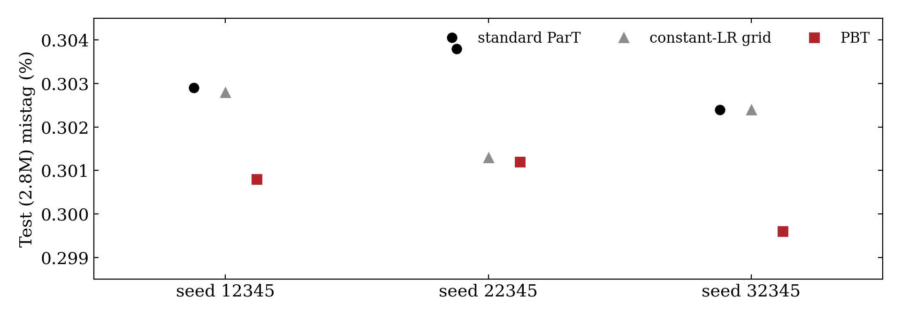
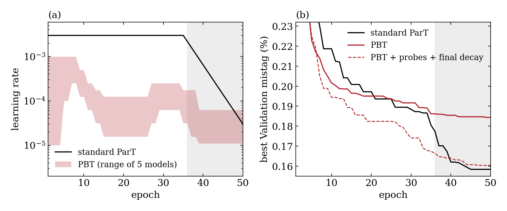
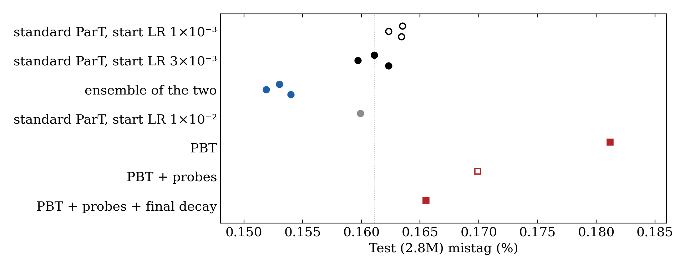

Summary. We fine-tune a pretrained Particle Transformer (ParT) that separates b, c and
light-quark jets, and ask whether Population Based Training (PBT), which changes the learning rate (LR) during
training, gives a lower mistag rate than standard ParT training. With 800k training jets, PBT lowers the mistag by
0.81% (three seeds; 95% interval 0.34–1.34%). With 8M training jets, PBT raises it by 12.4% (one seed), and
by 2.7% after two modifications. Earlier gains of 1.4% and 7.7% were measured against constant LRs that were too
low. With 8M training jets, the mean output of two separately trained standard ParT models lowers the mistag by
5.0% relative to the better of the two (three seeds; 4.2–5.8%).
1 Setup
All trials start from the same pretrained ParT checkpoint (epoch 17 of the pretraining) and fine-tune it for 50
epochs with the Ranger optimizer. The data samples are disjoint:
Sample
Jets
Use
Training (800k)
2.4M
training, July – 13 November
Training (8M)
24M
training, large-data trials
Validation (150k)
0.15M
evaluated after every epoch; drives PBT and selects the model; until 9 November
Validation (1M)
1.0M
the same role from 10 November
Test (2.8M)
2.8M
one evaluation of each selected model; never used to select
Test (9.0M)
9.0M
used once, for the preregistered large-data comparison of October
The mistag is the geometric mean of the background mistag rates at eight working points (b-tag at 80%
and 90% efficiency against c and light jets; c-tag at 50% and 80% against b and light jets). Lower is better. A
change Δ is relative to the comparator; negative Δ means a lower mistag.
Three training methods are compared. Standard ParT keeps a constant LR for 35 epochs and then lowers it
by ×0.01 over 15 epochs; it is run at five start LRs and the best model on Validation is kept. A
constant-LR grid trains five models at five constant LRs. PBT trains five models in parallel; at each
decision (every 5 epochs in September, every 2 epochs from November) the weakest model copies the weights of the
best one and multiplies its LR by 0.5 or 2. All methods use five GPUs for the same number of epochs. Each selected
model was fixed, and its Test evaluation was specified in the repository, before the Test data was read. Intervals
are 95% intervals from a bootstrap over blocks of 100 adjacent jets of the Test sample; they do not include
seed-to-seed variation.
2 History of the trials
Period
What was done
Result
Consequence
Jul 22 – Aug 31
First PBT versions and LR controllers
set-up; two defects fixed
training contract changed; results not used
Sep 15 – Nov 2 trials 1–11
PBT against a constant-LR grid (3×10−6–1.4×10−5); 800k, then 8M (preregistered)
Δ = −1.4% (800k), −7.7% (8M, Test 9.0M)
best constant LR was the top of the grid: grid too low?
Nov 2 – 9 trials 12–17
Constant LRs up to 3.2×10−4; faster PBT; second seed
constant 8×10−5 equals PBT; sign reverses with seed
Validation (150k) too noisy; change to 1M and to standard ParT
Nov 9 – 13 trials 18–21
PBT against standard ParT and a constant-LR grid, 800k, three seeds
Δ = −0.81% [−1.34, −0.34]
repeat with 10× more data
Nov 13 – 23 trials 22–26
The same at 8M; then cool-down probes and a final LR decay in PBT
Δ = +12.4%; +5.4%; +2.7%
PBT stopped; other ways to gain at 8M
Nov 23 – 25 trials 27–33
Ensembles of two standard ParT models, checked on two new seeds; distillation; no dropout; start LR 10−2
ensemble Δ = −5.01% [−5.84, −4.17]; others no gain
current result
Each trial, with its runs, dates, GPU time and configuration files, is listed in the Appendix.
3 Results
3.1 PBT against constant learning rates
The first comparisons (September–October) gave PBT a lower mistag by 1.4% at 800k and by 7.7% at 8M. In
both, the best constant-LR model was the one with the highest LR of the grid, and PBT had moved its LRs above
the grid. Constant LRs up to 3.2×10−4 showed that the grid was too low
(Figure 1): the mistag falls steeply with the LR up to about 10−4, and both PBT runs lie on
the same curve at the LR they reached. The gain of these comparisons therefore comes from reaching a higher LR,
not from changing it during training. A second seed also reversed the sign (+0.5%), and the Validation (150k)
sample disagreed with Test on which method was better; from 10 November the Validation sample has 1M jets and the
comparator is standard ParT.
Figure 1. Test (2.8M) mistag against the LR of the selected model, Training (800k), seed 12345.
Black: best model of each constant-LR grid. Red: the two PBT runs, at the LR of their selected model. Grey band:
the constant-LR grid used for the comparisons of September.
3.2 PBT against standard ParT with 800k training jets
With three seeds, PBT gives a lower mistag than standard ParT for every seed (Δ = −0.67%,
−0.85%, −0.91%; mean −0.81%, interval −1.34 to −0.34%). It is better at seven of the
eight working points on average. The constant-LR grid equals PBT for one seed and standard ParT for the other two
(Figure 2). Adding a final LR decay to PBT selected the same models.

Figure 2. Test (2.8M) mistag of the selected model of each method, Training (800k),
Validation (1M), for three seeds.
3.3 PBT against standard ParT with 8M training jets
With ten times more training data the result reverses. The best standard ParT model (start LR
3×10−3) reaches 0.1611; PBT reaches 0.1812 (Δ = +12.4%, seed 12345). Figure 3
shows why. Standard ParT keeps its LR at 3×10−3 for 35 epochs and gains most during the
final decay. PBT compares its models two epochs after each decision; over two epochs a lower LR almost always
looks better, so PBT lowers all LRs early (below 2.5×10−4 from epoch 11) and is overtaken in
the final 15 epochs.

Figure 3. Training (8M), seed 12345. (a) LR per epoch of standard ParT (start
3×10−3) and the range of LRs of the five PBT models. (b) Best Validation (1M) mistag so far.
Grey: the final decay of standard ParT (epochs 36–50).
Two modifications address this. Cool-down probes judge each model on a copy that is trained for a quarter
epoch at 0.1× its LR; a final decay stops the decisions in the last 15 epochs and lowers all LRs as in
standard ParT. Together they reduce the difference from +12.4% to +5.4% and +2.7%, but PBT remains worse.
The difference between 800k and 8M follows from the losses in Figure 4. At 800k the training loss falls
below the Validation loss after about 20 epochs: the model begins to memorise its training data, and an early lower
LR with selection of the best epoch is the right strategy, which PBT finds. At 8M the two losses stay together to
the end; the model is not limited by overfitting, and a long phase at a high LR followed by a decay is better.
Figure 4. Cross-entropy loss per epoch of the best standard ParT model on the training data and
on Validation (1M). (a) Training (800k), start LR 10−4. (b) Training (8M), start LR
3×10−3.
3.4 Ensembles of two models
The mean of the class probabilities of the two standard ParT models of one seed (start LRs
3×10−3 and 10−3) has a lower mistag than the better of the two for each of
three seeds: Δ = −5.05%, −4.86%, −5.14%; mean −5.01%, interval −5.84 to
−4.17% (Figure 5). The pair was chosen on Validation for seed 12345, its Test comparison was specified
before it was evaluated, and seeds 22345 and 32345 were trained afterwards to test it. Both models are part of the LR
scan that standard ParT training runs anyway; the cost is two models at inference time.
Two members of one PBT run give no gain (0.1605 against 0.1604 on Validation), because PBT copies weights
between its models and they make the same errors. Most of the gain comes from training the models separately:
pairs with the same start LR and different seeds gain 3.6%, pairs with different start LRs 4.7%. Distillation of
the ensemble into one model, weight averaging, and training without dropout gave no gain. At 800k, ensembles of
any two of fifteen models gave no gain; these models stay close to the pretrained start and disagree on only
0.6–0.7% of the jets, against 1.5–2.3% at 8M.

Figure 5. Test (2.8M) mistag of every evaluated model, Training (8M), Validation (1M). The three
points of a row are seeds 12345, 22345 and 32345 from top to bottom; PBT and the start LR 10−2
were run for seed 12345 only. Dotted line: standard ParT at 3×10−3, seed 12345.
Table 1. All comparisons on Test (2.8M) unless noted. Δ: relative change of the mistag;
negative is better.
Comparison
Training
Seeds
Δ
95% interval
PBT − constant LR (grid too low)
800k
1
−1.4%
–
PBT − constant LR (grid too low), Test (9.0M)
8M
1
−7.7%
–
PBT every epoch − every 5 epochs
800k
2
+0.5, +0.1%
–
PBT − best constant LR
800k
2
−1.0, +0.5%
–
PBT − standard ParT
800k
3
−0.81%
−1.34, −0.34
PBT − standard ParT
8M
1
+12.4%
–
PBT + probes − standard ParT
8M
1
+5.4%
–
PBT + probes + final decay − standard ParT
8M
1
+2.7%
–
Ensemble of two − better single model
8M
3
−5.01%
−5.84, −4.17
Ensemble of two − better single model (Validation)
800k
3
≈ 0
–
Distilled model − standard ParT (Validation)
8M
1
+1.0%
–
4 Interpretation
PBT gives a small but consistent gain when the training data is small enough for the model to overfit. Its
benefit is to find the right time to lower the LR.
When the model does not overfit, PBT is worse than standard ParT, because it judges LRs on a horizon of two
epochs and therefore lowers them too early. The modifications reduce, but do not remove, this loss.
The earlier positive results (1.4%, 7.7%) measured the benefit of a higher LR, not of adaptation.
With much data, the useful gain comes from combining separately trained models, not from the LR schedule.
5 Limitations and open questions
The 8M PBT results have one seed. All trials start from one pretrained checkpoint and use one optimizer
setting. Test (2.8M) was also inspected in diagnostics before November, so it is not fully unseen. No result has
been propagated to a physics analysis. Not studied: PBT decisions that look further ahead than two epochs (the
probes are a first step); ensembles of more than two models; PBT decisions within an epoch (implemented and verified,
not run); other pretrained starting points.
Appendix All trials and runs
Click a trial to show its runs. Dates are JST. The selected model is the best one on Validation;
for standard ParT the LR is the start LR, otherwise the LR at the selected epoch. Validation is Validation (150k)
for trials 1–17 and Validation (1M) from trial 18. Run names link to the configuration files.
Generated from the run records by scripts/reports/build_report_page.py and
scripts/reports/plot_report_note.py. Detailed results, protocols and the frozen test specifications:
results, configs/prepared.